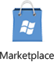

Для бизнеса
Новый Nokia Lumia – незаменимый и неутомимый помощник в работе. К вашим услугам – все IT-инструменты, необходимые современному бизнесмену: мощные приложения, эффективная конференц-связь, обмен данными и сообщениями, работа в корпоративной сети, облачные и локальные сервисы с надежной защитой информации.
Работа с документами в Office MobileКорректный просмотр и редактирование файлов Word, PowerPoint и Excel; файлы могут автоматически синхронизироваться с корпоративным SharePoint-сервером. Полная совместимость с Microsoft Office позволяет пользоваться сервисами и приложениями OneNote, Windows Live SkyDrive, Exchange, SharePointи Lync. |
Широкое взаимодействие с Outlook MobileРаздел «Контакты» объединяет информацию из нескольких источников – адресной книги Outlook, личной почты, социальных сетей и SIM-карты, позволяя легко найти нужного человека и создавать группы для рассылки сразу нескольким адресатам. Поддерживается одновременное пользование несколькими учетными записями. |
||
Защита конфиденциальных данныхЗащита информации гарантируется паролем и PIN-кодом: при неоднократном неправильном вводе все данные стираются автоматически. Эта процедура может быть совершена и удаленно, либо самим владельцем, либо администратором сервера Exchange. Для защиты передаваемых данных используются шифрованный протокол HTTPS и поддержка сертификатов. |
 |
Корпоративные приложения на Windows Phone MarketplaceРазмещайте здесь ваши собственные корпоративные приложения: сотрудники компании получат к ним доступ по скрытому URL-адресу, а для других пользователей они останутся невидимы. Кроме того, магазин предлагает огромный выбор бесплатного и платного программного обеспечения, включая Evernote, Adobe Reader и AirWatch. |
|
Обмен данными через SkyDriveБесплатный сервис Windows Live SkyDrive позволяет сохранять файлы, в том числе документы, фотографии и видеозаписи, и обмениваться ими с другими пользователями. SkyDrive интегрируется в Office Mobile, обеспечивая быстрый и удобный прием и передачу данных с нового Nokia Lumia. |
Делайте больше!Поддержка облачной платформы Office 365 позволяет оформить подписку на онлайн-сервисы Exchange, SharePoint и Lync. Использование таких облачных сервисов позволяет снизить расходы компании за счет предоставления именно тех средств работы, которые нужны, именно тем сотрудникам, которые в них нуждаются. |